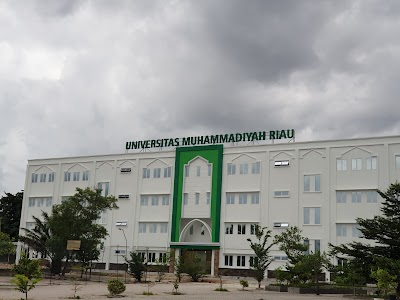

Bersamaan dengan kegiatan KKN Award, Universitas Muhammadiyah Riau (UMRI) bakal menggelar launching Penerimaan Mahasiswa Baru (PMB) pada Rabu (7/12/2022) malam.
Menurut Wakil Rektor I UMRI Dr Wirdati Irma Spd MSi, launching PMB bersamaan dengan kegiatan KKN Award ini merupakan sesuatu yang baru dilakukan, sehingga nantinya diharapkan akan bisa lebih semarak.
"Akan ada sesuatu yang berbeda juga nanti nya saat launching PMB ini, akan ada pemutaran film yang mengangkat cerita mahasiswa UMRI yang mendapatkan beasiswa. Judulnya, Semua Kita Bisa yang berlatar di wilayah Kampar," jelasnya, Senin (5/12/2022).
Cerita film ini menurutnya diangkat dari kisah nyata seorang mahasiswa yang menerima beasiswa. "Cerita dalam film tersebut akan menjadi kejutan bagi peserta launching beasiswa tahun ini. Pembuatan film berlangsung beberapa bulan," ucapnya.
Lebih lanjut Wirdati menjelaskan bahwa tahun ini PMB UMRI masih menawarkan proses pendaftaran online dan offline. Untuk yang lokasi tempat tinggalnya jauh, bisa mendaftar secara online. Untuk online, dibuat dengan sistem yang sederhana. Jadi pendaftar lebih mudah memanfaatkan websitenya. Sementara yang mau mendaftar langsung ke kampus akan dibantu dengan panitia.
Untuk target Mahasiswa yang akan diterima, Wirdati menyebut kalau UMRI menargetkan bisa menerima 2.800 mahasiswa baru. Jumlah tersebut naik 20 persen dari mahasiswa baru yang diterima tahun 2022 ini.
"PMB ini masih akan dilakukan dalam tiga gelombang, khusus untuk 100 pendaftar pertama pada saat launching, akan diberikan potongan uang pengembangan sebesar 50 persen," imbuhnya.
Sementara, Ketua Lembaga Penelitian dan Pengabdian kepada Masyarakat (LPPM) UMRI, Dr Aidil Haris SSos MSi menjelaskan, dalam KKN Award yang diselenggarakan tahun ini, akan diberikan penghargaan untuk beberapa kategori.
"Yakni untuk Kelompok KKN terbaik, dari luar dan dalam kota, kategori Dosen Pembimbing Lapangan (DPL) terbaik, dalam dan luar kota, selanjutnya kategori video sinematik, kelompok tereksis, dan kelompok terkreatif," jelasnya.
Selain itu, sebagai ucapan terima kasih kepada daerah yang telah memfasulitasi Mahasiswa UMRI untuk melaksanakan KKN, pihaknya juga akan menyerahkan penghargaan.